발음이 뭉개져도,
내 말은 내가 확정한다
구음장애인을 위한 개인 맞춤형 AI 의사소통·발음 재활 보조
AI는 후보를 내고, 확정은 언제나 사용자가 합니다
AI는 후보를 내고, 확정은 언제나 사용자가 합니다


42.9→18.7%구음장애 발화 글자 오류율
AI Hub 데이터 파인튜닝 실측
AI Hub 데이터 파인튜닝 실측
17.6만 명서울의 의사소통 곤란 장애인
등록장애인의 44.6% (서울시, 2020)
등록장애인의 44.6% (서울시, 2020)
실기기 동작인식→확정→발화 전 흐름이
iPhone에서 작동하는 프로토타입
iPhone에서 작동하는 프로토타입
온음이 말을 전하는 방법
확정 게이트를 지나지 않은 문장은, 어떤 경우에도 소리 나지 않습니다
1
상황을 고르고 말한다
파인튜닝 인식 모델과 범용 엔진이 동시에 듣고, 등록해 둔 내 표현과 대조해 후보를 나에게 맞춥니다.
2
후보에서 내 말을 고른다
불확실하면 후보 2~3개를 나열하고 숨기지 않습니다. AI가 복원한 문장에는 "제안" 표식이 붙습니다.
3
확정한 문장만 전한다
큰 글자와 명료한 음성으로 전달됩니다. 문장을 누르면 상대에게 화면 가득 보여줄 수 있습니다.
안전과 속도를 잇는 장치들

연습이 곧 등록,
연습하면 빨라진다
연습에서 인식이 검증된 문장만 "빠른 발화"로 등록할 수 있습니다. 등록 문장은 6중 안전 조건 아래 확인 없이 즉시 재생됩니다. 상황별 문장과 시·뉴스 낭독으로 발음 훈련을 겸하며, 점수도 등급도 없습니다.

AI 상대와
실전처럼 대화 연습
병원 접수·카페 주문 같은 실제 상황을 AI 상대역과 주고받습니다. 말하면 전사되고, AI가 음성으로 응답합니다. 연습 전용 공간이라 밖으로 전달되지 않습니다.

내 데이터는
내 휴대폰 안에만
등록 문장·교정 이력은 기기 안에 저장되고, 음성이 어디로 가는지 홈 화면에 늘 표시됩니다. 연습 녹음의 용도는 항목별로 따로 동의를 받습니다.

녹음 훈련 없이
바로 시작
해외 서비스의 500문장 녹음 훈련 대신, 자주 쓰는 문장을 골라 담는 것으로 시작합니다. 쓸수록 교정 이력이 쌓여 후보가 나에게 맞춰집니다.
"AI가 장애인의 말을 대신 만들어 주는 방향이 아니라,
AI가 후보를 내고 당사자가 확정하는 방향"
보조기술에서 당사자 통제권의 설계 표준을 제안합니다
온음 Oneum
D-Tech 공모전 Track 1 · 팀 티키타카
KoddiUD 온고딕 · 실기기 화면 수록
KoddiUD 온고딕 · 실기기 화면 수록